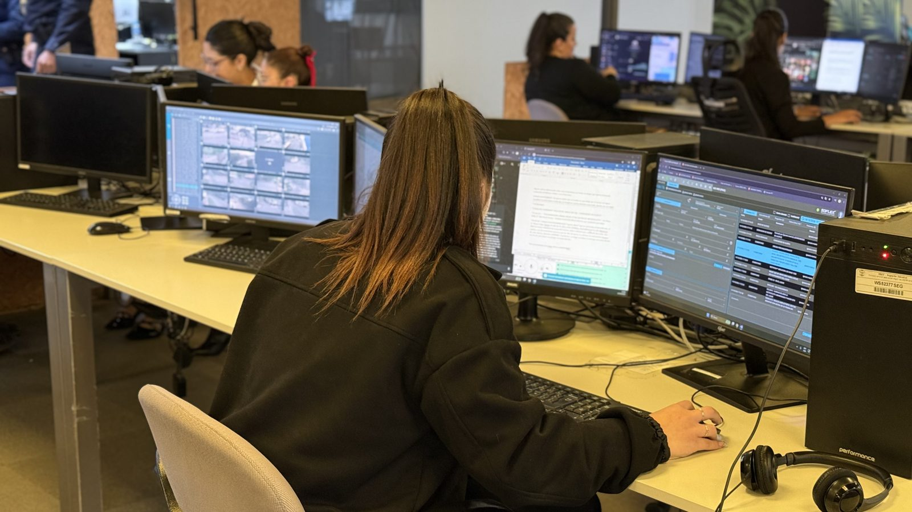

División
de Frecuencia
Operador de cabina y radio operador: del mensaje del vecino al móvil asignado.
Vamos a medir cuánto tarda en comisionarse cada hecho
- Cada hecho deja su recorrido registrado en el SAE WEB, con fecha y hora en cada paso.
- El recorrido pasa por dos manos: el operador de cabina, que crea la carta e irradia, y el radio operador, que despacha y asigna el móvil.
- Para que el móvil llegue rápido, cada uno tiene que cumplir su parte a tiempo y a la frecuencia correcta.
- Por eso la frecuencia se dividió en 8 partes, de acuerdo a la UT donde ocurre el hecho.
La ciudad, dividida en 8 frecuencias según la UT
Cada número del mapa es una UT (DJP). Cada frecuencia agrupa una o varias UT: el hecho se irradia a la frecuencia de su UT.
Así figuran las frecuencias en el RugGear
Cada frecuencia es un canal
En Canales aparecen las 8, cada una con las UT que abarca: NORTE 1 - UT 15, NORTE 2 - UT 14, 23, 24 BIS y así hasta OESTE.
Hecho en la UT 15 → Norte 1
Se marca el canal de la UT del hecho y queda «Escuchando este canal». En Resumen figura como Objetivo y abajo, en la última modulación.
Hecho en la UT 14 → Norte 2
Cambia el canal, cambia el objetivo. Con Presione para hablar se irradia el hecho a esa frecuencia.
Del mensaje del vecino al móvil en la calle
El vecino explica su situación
Por mensaje directo al cuadrante. Desde ese mensaje empieza a correr el tiempo.
Crea la carta en el SAE WEB
Teléfono, calle y altura. El sistema da las coordenadas y la UT.
Irradia a la frecuencia
Según la UT, por RugGear, al radio operador de esa frecuencia.
Despacha y asigna el móvil
El radio operador recibe la carta, asigna el móvil y deja constancia.
El móvil arriba
El personal de calle llega al lugar del hecho.
El operador de cabina crea la carta e irradia a la frecuencia que corresponde
- 01
Ingresa la alerta
Recibe el mensaje directo del vecino e interpreta qué está pasando.
- 02
Geolocaliza y crea la carta
Carga en el SAE WEB el teléfono y la calle con la altura; el sistema completa el resto.
- 03
Visualiza la UT a la que pertenece
El SAE WEB la muestra en el campo Comuna.
- 04
Irradia a la frecuencia que corresponde
Una vez reconocida la UT, pasa el hecho por RugGear a esa frecuencia.
Un hecho en la UT 15 se irradia a NORTE 1
Un hecho en la UT 14 se irradia a NORTE 2
El radio operador recibe la carta, despacha y asigna el móvil
- 01
Misma modalidad
Trabaja su frecuencia: recibe solo los hechos de las UT que le corresponden.
- 02
Recibe la carta
Abre en el SAE WEB la carta que le irradió el operador de cabina.
- 03
Despacha y asigna el móvil
Asigna el móvil de la zona y lo despacha al lugar del hecho.
- 04
Deja constancia y eleva la asignación
Registra en la alerta todo lo trabajado.
El tiempo corre desde que el vecino explica su situación
Interpreta, crea la carta e irradia
Crear la carta y designar la frecuencia se hacen en simultáneo.
Abre la carta, despacha y asigna el móvil
Desde que abre la carta hasta que el móvil queda asignado.
Arribo del móvil
El sistema lo registra solo.
gracias!